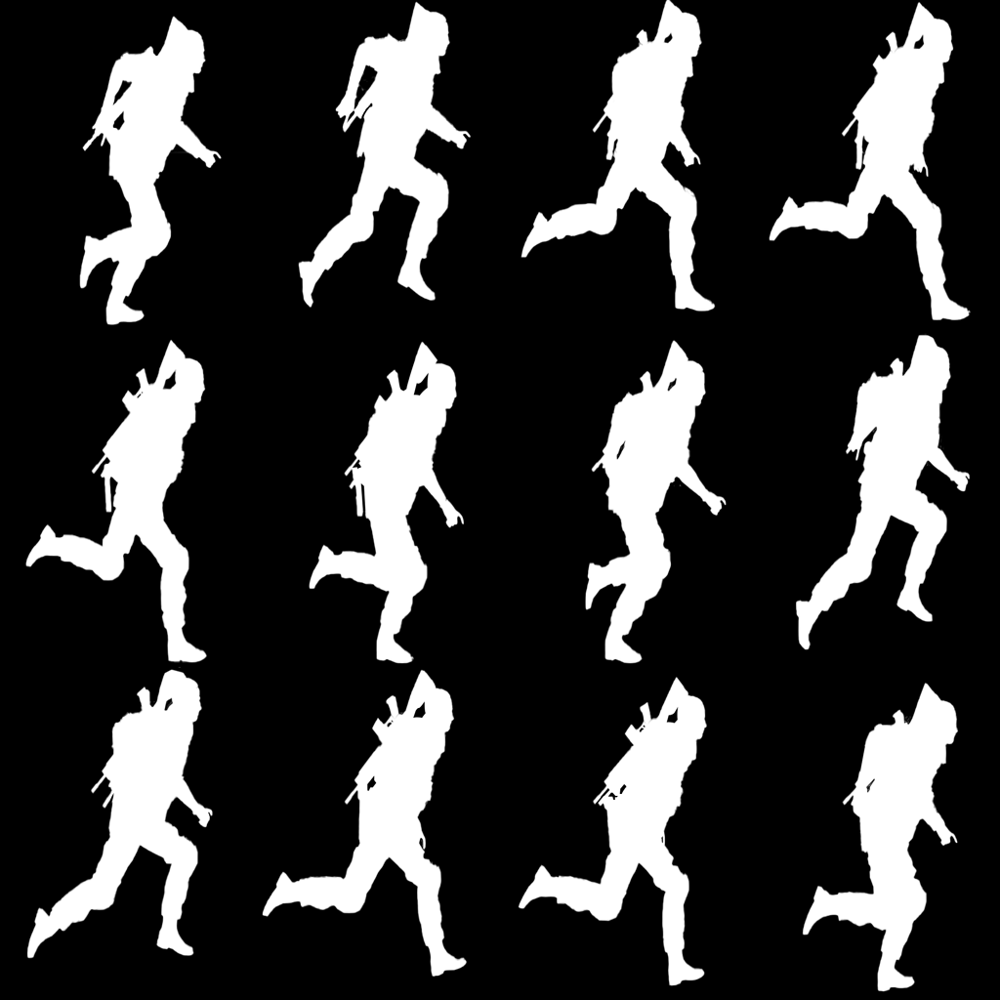
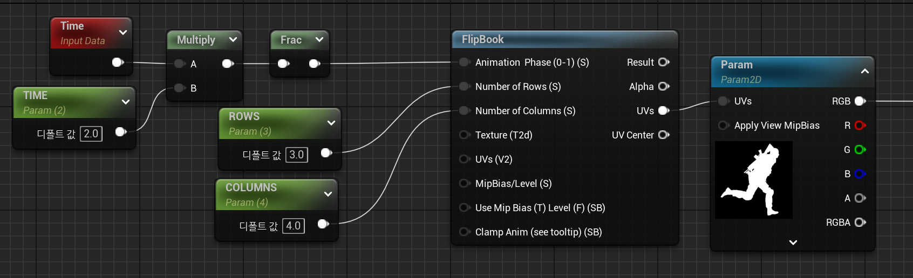

2D 스프라이트 제작
스프라이트 이미지는 Adobe After Effects 및 Photoshop에서 제작할 수 있습니다.
머티리얼 노드에 올바르게 매핑되도록 하기 위해, 텍스처의 해상도를 2의 거듭제곱(예: 256x256, 512x512, 1024x1024 등)으로 설정하는 것이 권장됩니다.
이를 통해 최적화된 샘플링과 GPU 메모리 효율성을 확보할 수 있으며, 언리얼 엔진의 텍스처 필터링 및 MipMap 생성 과정에서 예상치 못한 왜곡을 방지할 수 있습니다.

노드 풀이
FlipBook 노드
Animation Phase (0-1): Frac 노드에서 받은 0~1 값이 입력됨. (이 값이 애니메이션의 속도)
Number of Rows: 세로 값 입력
Number of Columns: 가로 값 입력
UVs 출력: Flipbook UV 좌표를 계산하여, Texture Sample에 연결하면 스프라이트 시트의 각 프레임을 순차적으로 표시.

자주 사용하게 되는 노드 설명
FlipBook : 2D 스프라이트 애니메이션을 위한 기법으로, 여러 개의 프레임이 포함된 텍스처를 활용하여 순차적으로 재생합니다.